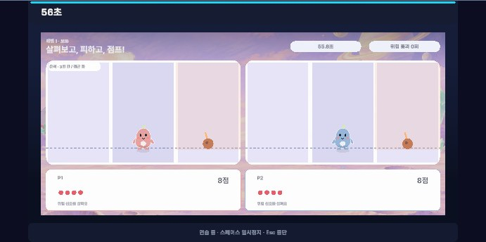
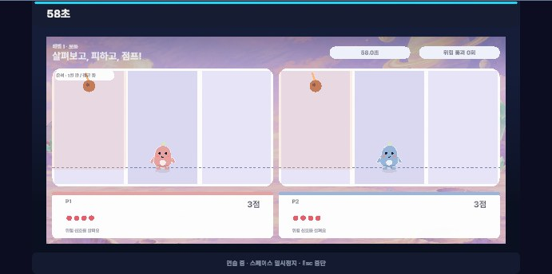
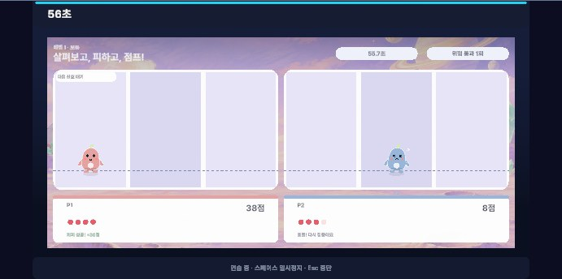

G012 운석 피하기! 좌우 점프 — C# 이식 확인
HTML 게임 「운석 피하기! 좌우 점프」(G012 v1.0, 회원님이 주신 HTML 파일)를 이 저장소의 C# 틀(판정 → 감독 → 무대)로 옮겼습니다. 1~4명이 저마다 3칸 길에서 같은 위험에 동시에 도전해, 떨어지는 운석은 옆 칸으로 피하고 다가오는 충격파는 점프로 넘는 게임입니다. 회원님 결정대로 입력만 단추·키보드 → 카메라(옆 걸음·제자리 점프) + 폰(좌우 기울기·단추 점프)로 바꾸고 나머지는 모두 원본대로 옮겼습니다. 주개발자 게임과 같은 흐름(참가 → 동작 연습 → 시작)을 넣었고, 앱 「웹 게임」에 붙여 넣는 HTML 판도 함께 올렸습니다. 새 파일만 더했고 기존 파일은 고치지 않았습니다.
브랜치 열기 · 기준과 비교 · PR #109 · 진행 기록
변환 기록
- 2026-11-26 22:45카드 한쪽 색 띠 없앰 — 둘레 전체 같은 색 테두리(c61d186, main 합친 acad5fb: 컴파일 오류 0 · EditMode 6083/6094, 맥 전용 7건 제외). 맥 에디터에서 경기 화면 확인PR #138
- 2026-11-26 22:30앱에서 다시 확인(맥 에디터 · 흉내 장치, 연습 판) — 카메라판: 두 명 참가 → 연습(왼쪽 · 오른쪽 · 점프) → 경기. 선 자리로 칸이 바뀌고, 물결은 점프하면 넘고 가만히 있으면 맞음, 체력 0이면 탈락. / 폰판: 연습(기울였다 돌아오기 왼쪽 · 오른쪽, 누르기 점프) → 경기. 운석 칸에서 기울여 옮기면 피함, 가만히 있으면 맞음. / 흉내 한계: 한 장면에 두 칸을 순간 이동시키면 칸이 안 바뀐 적이 있고(실제 사람은 순간 이동하지 않음), 흉내 폰은 누르기가 1초 넘게 늦어 폰판 물결 점프는 못 넘김. / 디자인: 사람별 점수판 위쪽 색 띠 — 회원님이 쓰지 말라 하신 「한쪽 색 띠」 꼴, 고칠 것.PR #138
- 2026-11-22 21:40수정 요청 반영 — 폰 기울기 문턱 0.3·쉬는 손 자리 보정(오른쪽이 덜 잡히던 것), 12초마다 빨라져 1.0초까지, 레벨 3(24초)부터 두 칸에 한꺼번에 떨어지는 운석. 폰·카메라 두 장은 로비에서 카드 한 장으로 묶음PR #130
- 2026-11-17 22:25HTML 판(붙여넣기용)도 원본 형식 그대로 — 폰 기울기·단추로 같은 규칙(웹에 오는 카메라 동작으로는 좌우 칸을 받을 수 없어 폰만, 설정은 기본값 고정). 앱 웹 게임 검사기 통과, 앱 안 실행(Windows)은 못 함PR #109
- 2026-11-17 22:25처음 변환 — 입력은 회원님 결정 「카메라 + 폰 둘 다」(카메라는 선 자리가 곧 칸·제자리 점프, 폰은 좌우로 기울였다 돌아오면 한 칸·단추 점프), 나머지는 원본대로: 1~4명 동시, 30·60·90초, 보호막 5·4·3, 위험 종류 셋, 예고 1.1초·20초마다 낙하 빨라짐, 회피 +30·생존 1초당 2점. 봇은 원본 시범 조작. 참가 → 동작 연습(왼쪽·오른쪽·점프) → 3초 → 경기PR #109
2026-11-22 수정 요청 반영
요청(김권수, 11-22): 「스마트폰 연결 동작 시 오른쪽으로 이동하는 것이 인식이 잘 안 됨」 · 「진행 자체가 재미가 없어요 … 속도가 빨라지거나 하는 변수」.
| 무엇 | 전 | 후 | 까닭 |
|---|---|---|---|
| 폰 좌우 문턱 | 0.5(약 30°) · 되돌림 0.25 | 0.3(약 17°) · 되돌림 0.15 | 앱의 기울이기 퀴즈는 0.2 — 우리 게임만 두 배 넘게 기울여야 했다 |
| 기울기를 재는 기준 | 앱 영점(폰을 처음 잇던 자세) | 쉬는 자리 — 쉬는 손의 작은 흔들림을 천천히 따라가고, 덜 돌아온 채 1초 쉬면 그 자리를 새 가운데로 | 쉬는 손이 영점에서 왼쪽으로 치우쳐 있으면 오른쪽만 더 기울여야 한다(추정 원인 — 실물로 재 보지 않았다) |
| 빨라지는 속도 | 20초마다 낙하 −0.2초, 1.3초까지 | 12초마다 −0.25초, 1.0초까지 | 「속도가 빨라지거나」 |
| 두 칸 운석(새로) | 운석은 늘 한 칸 | 레벨 3부터 운석 둘째마다 두 칸에 떨어진다 — 안전한 칸은 하나 | 「재밌을 수 있는 요소」 — 끝 칸에 있으면 두 칸을 건너야 해서 판단이 늘어난다 |
점수(회피 +30 · 생존 1초당 2점)·보호막·점프·충격파는 그대로. 카메라 판정도 그대로.
흐름 — 참가 → 동작 연습 → 시작
| 단계 | 누가 | 무엇 |
|---|---|---|
| 1. 참가 화면 | 앱(그대로) | 카메라(또는 폰·컨트롤러)로 1~4명 참가 |
| 2. 입장 뒤 동작 연습 | 이 게임(MeteorDodgePractice) | 왼쪽으로 → 오른쪽으로 → 점프를 저마다 한 번씩. 단계마다 참가자 전원(봇은 바로 통과)이 해야 「잘했어요!」 0.8초 뒤 다음 단계, 셋을 마치면 시작. 연습 동안 칸 이동·점프가 화면에 그대로 보입니다. 선생님은 앱의 「바로 시작」/Enter. |
| 3. 게임 시작 | 앱 3초 세기 → 이 게임 | 탐험 시간 동안 위험이 하나씩(예고 → 낙하 → 판정). 시간이 다 되거나 모두 보호막을 잃으면 앱이 경기를 닫고 결과 화면 |
직접 해 보기
C# 판정과 같은 규칙과 숫자로 움직입니다. 키보드는 원본과 같습니다 — P1 ← → Space · P2 A D W · P3 J L I · P4 F H T(왼쪽 · 오른쪽 · 점프). 앱에서는 이 자리를 폰 기울이기·단추, 또는 카메라 옆 걸음·제자리 점프가 맡습니다. 「시범 보기」면 모두 봇이 원본 시범처럼 피합니다. Enter는 선생님의 「바로 시작」.
운석 피하기! 좌우 점프
떨어지는 운석은 옆으로 쏙! 다가오는 충격파는 타이밍 맞춰 점프! 1–4명 · 좌우로 피하고, 점프로 넘어요!
- 주황 표시가 뜬 칸으로 운석이 내려와요. 옆 칸으로 피하세요 — 점프로는 못 피해요.
- 보라색 충격파는 아래 판정선에 닿기 직전에 점프! 연속 점프에는 잠깐 회복 시간이 필요해요.
- 회피 +30점 · 생존 1초당 2점. 12초마다 낙하가 빨라지고, 레벨 3부터는 운석이 두 칸에 떨어지기도 해요.
- 보호막을 모두 잃으면 그 탐험가는 응원해요.
출발 설정
안전 넓은 공간에서 · 옆 사람과 2m 이상 · 점프는 낮게, 무릎을 살짝 굽혀 착지 · 폰은 두 손으로
HTML 판 — 원본 형식 그대로 함께 올렸습니다
주개발자 요청(「HTML·유니티 둘 다 올려 보라」)대로, 앱의 「AI로 게임 만들기 → HTML 붙여넣기」에 그대로 넣으면 도는 HTML 한 파일도 같은 PR에 넣었습니다: docs/progress/g012-meteor-dodge-web/game.html(설명 README).
| Unity C# 판(앱 내장) | HTML 판(붙여넣기용) | |
|---|---|---|
| 규칙·숫자 | 같다 — 원본 v1.0(예고 1.1초·낙하 시간·셋째마다 충격파·점프 창·보호막·회피 +30·생존 1초당 2점) | |
| 입력 | 카메라(선 자리 = 칸 · 제자리 점프) · 폰(좌우 기울기 · 단추 점프) | 폰만 — 웹 게임에 오는 카메라 동작(Jump·Raise·Squat)으로는 좌우 칸을 받을 수 없다 |
| 설정 | 규칙 파일 칸(시간 30·60·90, 난이도 셋, 위험 종류 셋) | 기본값 고정(60초 · 보통 · 섞임) |
| 동작 연습 | 있음(왼쪽 · 오른쪽 · 점프) | 없음 — 앱이 시작을 알리면 바로 경기 |
- 통과 앱이 붙여 넣은 HTML에 거는 검사기(
WebGameLint.Check규약 ·FindClassroomHazards교실 위험 ·WebGameImport바깥 주소)를 맥 Unity에서 돌려 문제 0건. - 끝까지
dfz대역 위에서 60·120Hz로 한 판(두 사람 · 한 사람)을 돌려 끝 알림(dfz.finish)이 한 번 오는 것을 봤습니다. - 안 함 앱 안 격리 브라우저에서 실제 실행 — 그 엔진이 Windows 전용이라 맥에서는 못 돌립니다.
원본 HTML판에서 달라진 것 — 입력
| 원본 HTML판 | 앱판(C#) | 까닭 |
|---|---|---|
| 사람마다 ← · → 단추(키) 한 번 = 한 칸 | 카메라: 선 자리가 곧 칸(처음 선 자리에서 어깨 너비 0.6배 넘게 옆이면 옆 칸, 0.4배 안이면 가운데) / 폰: 좌우로 기울였다 돌아오면 한 칸 | 원본이 권한 실제 활동(사이드스텝)을 카메라가 그대로 읽는다 |
| 점프 단추(키) | 카메라: 제자리 점프(앱 카메라 Jump) / 폰: 누르기·톡 | 같은 뜻 |
| 「혼자 시범 보기」(자동 조작) | 앱 봇이 같은 가상 조작(운석은 0.45초 뒤 옆으로, 충격파는 0.32초 전 점프) | 봇 행동이 곧 원본 시범 |
| 이름 입력 칸 · 결과 표 · txt 저장 | 자리 표시(P1~P4) · 사람 카드(점수·보호막·상태) · 앱 결과판 | 앱 공통 |
| 탐험가 그림(헬멧 쓴 아이) | 앱 캐릭터 「콩콩이」(사람 색) | 학년별 게임과 같은 캐릭터 |
| 어두운 우주 바탕 | 배경 그림(밝은 파스텔 행성, GPT) 위에 원본 길 그림 | 게임마다 다른 밝은 장면 |
그대로 옮긴 것: 1~4명 동시, 탐험 시간 30·60·90초, 난이도(보호막 5·4·3, 낙하 3.1·2.6·2.1초), 위험 종류 셋, 예고 1.1초, 첫 위험 0.6초·다음 0.55초, 운석은 점프로 못 피함, 충격파는 떠 있어야(뛴 뒤 0.12~0.67초) 넘음, 점프 0.85초·회복 1.1초·점프 중 좌우 이동, 회피 +30·생존 1초당 2점, 보호막을 다 잃은 사람만 끝·모두 잃으면 경기 끝, 공동 우승. 2026-11-22부터 원본과 다른 것: 빨라지는 속도(원본 20초마다 −0.2초·1.3초까지 → 12초마다 −0.25초·1.0초까지)와 두 칸 운석(레벨 3부터).
새 파일
| 파일 | 무엇 |
|---|
앱에서 해 본 것 (2026-11-26 · 다시 확인)
맥 Unity 에디터 SessionTest Play, 가지 claude/fixes-1126(PR #138)에 최신 main을 합친 55aa86e, 연습 판(기록·순위에 안 올림). 카메라는 실물이 아니라 앱 안의 시험 장치(CameraPoseHost.StartWithForTest + FakePoseEstimator)로 골격만 넣었습니다 — 맥 카메라는 켜지 않았습니다. 골격 → 참가 → 판정 → 점수는 실제 코드입니다. 폰은 실물이 아니라 앱이 여는 폰 페이지를 브라우저로 열고 W3C 정의대로 기울기·중력 값과 누르기를 넣었습니다(폰 페이지 → 폰 서버 → 해석기 → 판정은 실제 코드).
- 카메라판: 두 명 참가 → 연습(왼쪽 · 오른쪽 · 점프) → 경기. 선 자리로 칸이 바뀌고, 물결은 점프하면 넘고 가만히 있으면 맞음, 체력 0이면 탈락.
- 폰판: 연습(기울였다 돌아오기 왼쪽 · 오른쪽, 누르기 점프) → 경기. 운석 칸에서 기울여 옮기면 피함, 가만히 있으면 맞음.
- 흉내 한계: 한 장면에 두 칸을 순간 이동시키면 칸이 안 바뀐 적이 있고(실제 사람은 순간 이동하지 않음), 흉내 폰은 누르기가 1초 넘게 늦어 폰판 물결 점프는 못 넘김.
- 디자인: 사람별 점수판 위쪽 색 띠 — 회원님이 쓰지 말라 하신 「한쪽 색 띠」 꼴 → 고침(PR #138 c61d186): 둘레 전체 같은 색 테두리·색 점.



검증한 것과 안 한 것
- Unity 맥 Unity 6000.5.9f1 · 빌드 대상 Win64 · 가지 95deef8 스냅샷: 컴파일 오류 0, EditMode(골라 돌림 — 「MeteorDodge」, 전체 아님) 45건 모두 통과.
- .NET 같은 52건을 .NET 8·C# 9·경고를 오류로·NUnit 3.14로도 돌렸습니다(main의 실제 파일과 함께 묶음).
- 빨간불 확인 판정·칸 읽기·연습·감독·무대 규칙 96개를 하나씩 끄면 모두 검사가 실패합니다. 처음엔 10개가 구멍이라 검사 3건을 더하고 5건을 보강했습니다. 2026-11-22 고친 판(쉬는 자리 기울기·빨라짐·두 칸 운석)은 규칙 115개 — 처음 구멍 2개를 검사 1건 보강으로 메웠습니다.
- HTML 판 앱 웹 게임 검사기 통과(위 절).
- 안 함 앱 화면 촬영(앱에 아직 연결 전이라 앱 화면이 없음), 실물 카메라·폰으로 한 판(만든 분들이 확인), Windows 실행.
앱에 붙이려면
- 규칙:
FlowType맨 뒤에MeteorDodge,FlowTypes.IsMovedHtmlGame,FlowSpec·검증기·스키마에meteorDodgeLevel(easy·normal·hard)·meteorDodgeHazards(mixed·meteor·wave). 탐험 시간은roundSeconds(30·60·90) —MeteorDodgeSettings.From(roundSeconds, …)로 감독에. - 연습: 안내 단계(
SessionState.Intro)에서 이 게임이면 안내 카드 대신 감독 연습 —BeginPractice, 장면마다SyncRoster→ 입력HandleInput(e, now)→ (카메라면)SyncPoses→TickPractice→ 무대SyncPractice.PracticeStartRequested면RequestSkipIntro(). - 경기:
UguiNativeActivities에서SyncRoster→HandleInput(e, now)→ (카메라면)SyncPoses→Tick(경기 시간, 판)→ 무대Sync.Award는HandleActivityInput으로,Finished면runner.CompleteCourse(now). - 그림:
stage.Backdrop = _hud.StageArt; - 출시:
StreamingAssets/games/g012-meteor-dodge{,-camera}/,GameTitles.FolderById, 표지, 말 표(meteorDodge.*, 진행 기록에 ko·en).
실물에서 봐 주셨으면 하는 것
- 카메라 칸 경계 — 어깨 너비 0.6배(옆 칸)·0.4배(가운데)가 사이드스텝 한 번에 알맞은지, 좌우가 거울처럼 맞는지, 4명이 나란히 설 자리가 되는지.
- 카메라 점프 — 앱 카메라 점프가 충격파 판정 창(뛴 뒤 0.12~0.67초)에 늦지 않게 오는지.
- 폰 — 좌우 문턱 0.3·되돌림 0.15(2026-11-22 낮춤)와 쉬는 자리 맞추기로 오른쪽·왼쪽이 같은 크기로 되는지, 단추 점프가 손에 맞는지.